I climbed back down the steps to my arrival point on Riven. The cage was situated along the edge of a cliff. overlooking a large deep blue ocean. From here I could see two more islands off in the distance. In the middle of the water, I saw a smaller rock formation along with some man made foundations that appeared to be supporting a twin rail track of some sort.
I stepped closer to the edge and noticed a small ledge about fifteen feet below me. Laying on the ledge was the body of the guard that I first encountered. He didn't move as I looked down on him, so I assumed he was either unconscious or dead. I had nothing in my gear to help him, and at this point I wasn't sure if helping him would be in my own best interests.
On the outside, my prison cell resembled a black capsule partially sunken into the ground. I walked back towards the large lever that controlled the bars and tried to move it, but it wouldn't budge. Wedged into the switch mechanism was a small knife blade, almost resembling some sort of intricately molded metal arrowhead. The blade was a sharp tip, followed by a circular shaped handle.
I walked up to the prison cell and tossed one of my packs inside for a test. The pack landed on the metal platform with a loud clank, followed by the sound of springs as the floor bounced under the weight. No bars appeared, no bells sounded, and no guards came out of hiding. The linking trap was disabled. At least now I didn't have to worry about Atrus.
Next to the cell was a giant dagger, almost identical to the blade wedged into the switch mechanism. I walked over to the giant upright dagger which stood close to 15 feet in height, even with half its blade submerged in the rock. From the point where the blade met the earth ran a section of metal that went across the ground to a object I hadn't examined yet. It was a metlic structure shaped like an ice cream cone suspended above the ground by two metal struts on its side. The entire assembly was surrounded by a circular guardrail with a opening in the front allowing for a closer inspection. At the front of the cone was an eyepiece with a lens.
I put my eye up to the lens and tried to look through. Whatever I was looking at, it was too bright and blurry to make out. I looked down to the tip of the cone and felt along the bottom. There was a glass piece on the underside as well, so I assumed that I was looking down, almost as if the contraption was a giant microscope. Directly underneath the tip of the cone was a small hatch. I tried to pull it open but it was locked. In front of the handle was a row of five buttons, presumably the locking mechanism.
Along the guardrail was a control lever which I could rotate from the up position downwards, back and forth. A button was recessed into the base of the lever, but pushing it offered no insight as to what its function may be. A pair of hoses ran from the control assembly to a motor next to one of the support struts. From the other side of the motor a pipe ran into the mountain behind me.
To my right was a giant dome made out of bright gold metal, submerged into the natural formation of the mountain. The sunlight reflected off of the dome in all directions making it difficult to take in any details. About twenty feet above me I could make out a bridge going from the dome to the ledge of a smaller rock formation.
I climbed up the steps along the side of the mountain looking over my right shoulder to the sea. At the top of the steps was the entrance to my left to a tunnel I hadn't explored yet. To my right was the bridge that went across the ravene to a cave in another rock formation.
I turned left into the tunnel and arrived at the entrance to a large room. The interior of the room was shaped like a pentagon with wooded pillars at each corner. Above me the room was lighted by the pinpoint lights placed around a dark domed ceiling, giving me the impression of looking out amongst the stars.
Below my feet was a circular crest with a large pentagon shaped symbol inside. It looked like the symbol on the guard's hat. In the middle of the pentagon was a symbol of a square with a horizontal line through it, identical to the symbol on the cover of the Riven book. Spanning from the center of the crest stretched out five leaf-like pen nibs extending to each corner of the pentagon. Finally, along the edge of the pentagon were symbols represending open books, with the spine of each book lining up along each corner.
There was another exit, but it was blocked by a thick metal privacy gate. In the center of the twisted metal design was a five pointed crest in the middle, identical to the one that marked the floor. Through the open areas of the gate I could see that it lead out to a bridge which apparantly went across to the giant dome.
Along the brick walls in the room were phrases written in the D'ni lanauge. I had no comprehension of the language myself, but I knew what it looked like from the Linking Books I used and the samples I noticed Atrus Write when he made notations in his own journals. I wondered if the people of Riven used the D'ni language exclusively, or in conjunction with their own.
In front of every wooden column was a golden beetle, perched at eye level. I walked up to one of the beetles to examine it more closely. At the bottom of the scarab I noticed a small draw-string. I pulled the string down and the beetle opened its hidden wings revealing a small viewing hole in its back. I noticed a light source from within the hole so I pressed by eye up to see what was inside.
From inside the beetle I found a stained glass image of huge man with his arms spread out towards the yellow heavens. Beneath him were many smaller people on the ground bowed down in awe and respect. Behind the head of the large figure was an open book.
I pulled my head back from the beetle and thought about the image for a second. It appeared to have some sort of cultural significance. I would probably know more if I knew who these images were of.
Presumably the column directly ahead of the entrace to this room was the first column. I went clockwise around the room viewing the image in each scarab. Each one held an intricately crafted stain glass image. I recorded the details from each one below.
I walked away from the final beetle and back towards the entrance. My initial musings gave me the impression that the great man in those images was Gehn. The man falling down the chasm was perhaps Atrus. If that were so, then Gehn was the godly image that was revered in all the other images as well.
The other images appeared to talk about the creation of Books, leading to the creation of Ages. But that couldn't be right since Gehn was trapped on Riven. Atrus and Catherine destroyed (or stole) all the books they could find to prevent his escape. But what if these images detailed events that truely occured after Atrus and Catherine left Riven?
I sat down in the short entryway and took out the small journal Atrus had given me. The journal had only been started a little over a month before I arrived on Myst Island. Inside he chronicled his attempts to repair the damage to Riven (or the Fifth Age as his father had named it) at least until he could move the people of this Age to a new one. Unfortunately, he needed to trap Gehn in order to complete this task, which was why he created the Prison Linking Book (which sounded like it was the same type of Book he had used to trap his sons Sirrus and Achenar).
It sounded like he was working on this plan for quite some time. There were records of his attempts to fix the descriptive book for Riven. He also wrote of my arrival into his world and how he had hoped that he could count on my assistance when the time would arise. I was now an intrigal part of his plan and to capture Gehn and free Catherine on Riven while he continued working on keeping the book stable. Somehow I was to signal him once Gehn was trapped and Catherine free, possibly using something known as the Star Fissure.
I stood up from the cold ground and tucked the journal back into its hidden pouch. In the shadow of the opposite wall I suddenly noticed a large button recessed into the wall at waist level. Out of curiosity I pressed it with the palm of my hand.
The button recessed into the wall with a dull clank and popped back out. To my left I heard the heavy sounds of shifting rock. The ceremonial room was rotating. I watched as the entrance turned into the side of the wall and a layer of rock rotated clockwise in front of me. Another opening appeared, reavealing a recessed niche with a peephole.
I cautiously approached the peeophole and looked through it. Directly in front of me was one of the wooded columns, so I assumed that my position was behind one of the walls with the D'ni writing. The peephole was probably concealed in one of the cracks of the brickwork. The second entryway was now to my right and it appeared that there was another entrance behind it.
I backed out of the recess and pushed the button again. The same thuds underneath the room sounded and the rotation began again. I was faced with another peephole. Pressing the button one more time revealed another entrace.
I walked back into the room trying to get myself orientated. From the crest on the floor and my basic understanding of geometry I had rotated the room 216 degrees clockwise. (72 degrees for each push of the button). I had just entered this room from the entrance that originally lead to the dome outside, and the entrance I normally used now faced a door covered with a decorate iron gate, similar to the one I saw earlier. Behind the gate I could make out a solid metal door.
I knew there were three entrances to this room depending on the rotation angle, and perhaps there were two more that were out of my sight. However, there were only two doorways in this room so you couldn't access all of the paths at once. The other problem was getting the gates open. Maybe there were other ways I could get to these areas. Other entrances.
I left the rotating room and walked out the short tunnel leading outside. To my left was the staircase leading down to the cave entrance. I made my way down to the wooden door and re-examined the padlocked door. The padlock was sturdy and while the door appeared to be made of primitive planks tied together it still withstod my attempts at opening it. I looked down at the ground and noticed another one of those strange dagger symbols stuck into the dirt. It was identical to the one jammed into the trap mechanism that I encountered before.
From down here I noticed that while the door was still sturdy, none of the planks even came close to touching the ground. I could easily see underneath into the dark cave and I began to wonder if I could just squeeze myself under the door. I lowered onto my chest and inched my way under the door. One of the planks dug into my back so I shifted to the left to avoid it. Once my torso was through I pulled my legs in with relative ease. I guess I didn't have to worry about finding a key to that padlock.
The cave was dark, but I was able to make out a short ladder in front of me climbing over a small rock formation. I climbed the ladder and walked across a wooden plank to a tiny light source at the other end of the cave. Once I was right in front of it I realised it was a peephole similar to the ones I had seen before.
I walked up to the peephole and took a look through it. In front of me I could make out a wooden column with a golden beetle perched at eye level. It was the same room! I pulled my head back and immediately looked at the ground below me. In the surface of the rock I could make out a hairline crack between the ground and the peephole. This could be another entrance.
I ripped out a small piece of paper from my journal and marked it with an X from my pen. I wedged the paper into one of the rocks of the peephole making sure it would hold. I then turned around and went to the cave entrance carefully wiggling my way outside underneath the wooden door. Once outside, I made my way back up the side of the mountain to the entrance of the rotating room. In front of me was the second entrance I used before. I reached out with my right hand and pushed the metal button. The room rotated once again and after a few seconds I found myself facing another peephole. Only this one had a piece of paper wedged into one of the rocks.
I took the paper out and made sure it had the X on it. It did. Putting the X on the paper was probably unnecessary, but it did add a level of accuracy to my test.
I pictured the room configuration in my mind and made my way back down the steps to the cave entrance. I squeezed under the door and made my way up the wooden ladder. Even from here I could tell my suspicion was correct. I had found another entrance to the room.
I walked into the room and found that the other entrance lead to the fifth possible opening; one I had never seen before. I made my way cautiously down the opening, which lead to another cave tunnel.
At the bottom of the tunnel was a T-shaped pipe assembly. The main pipe started from the ground leading out to a small opening in the cave, where I could see steam escaping into the sky above me. In the middle of the pipe was a horizonal joint with a flow control lever. The pipe leading out from the T-joint went directly into the rock across from it. Next to the lever was a sign with a silhouette image of the ice-cream cone mechanism I saw before. This must be the pipe that leads out to the machine.
I turned the valve, redirecting the flow of steam; the horizontal pipe got warmer as the steam passed through it. I wondered if I should return to the mechanism outside, or if I should continue to try and find a way to open the other entrances from the rotating chamber.
I walked back to the entrance and noticed there was another button at this entrance along with a lever on the other side of the doorway. I realised that if there was a button at this point, then it wouldn't take as long as I expected to get to the other rooms. I pushed the button and the room rotated again. I pressed the button one more time and the rotation continued, giving me an extrance to the chamber. The other entrance was now situated against one of the doors covered with a gate. Next I tried the lever on the left hand side of the entrance I was standing in. Pulling the lever upwards made the grating to the other entrance retract. I had now gained access to four out of the five entrances available.
I walked across the floor to the other entrance and found a single room with a door at the other end covered with the same pentagon gate design. There was another button and lever, identical to the ones I used before. I pushed up the lever and I could hear a gate open, presumably it was the one that covered the final entrance. I couldn't find any controls to open the door behind me, so I decided to try concentrating on the other entrance I needed to open.
I pushed the rotation button again and was faced with a peephole after the room rotated 72 degrees clockwise. I pressed the button one more time and I was faced with a doorway leading in to the room, and another doorway leading out to the entrance I first used to gain access almost an hour ago.
I walked across the room to the opposite entrance and pressed the button to start the rotation process. I would have to press the button one more time to get the another entryway. The other entryway of the gate room was now lined up with the bridge, and this time the iron grating that covered that entrance was gone.
I walked over to the other entryway and out across the wooden bridge. In front of me was the huge golden metal dome. From this vantage point I noticed that there was a section down the middle of the dome that was stripped as if someone had taken a giant blade and attempted to slice the dome into two equal halves.
I composed a chart of the rotation progress for correct sequence of gaining access to the bridge from the gate room.
|  | ||
| Entrance | Rotation Control |
Gate Control |
|---|---|---|
| A | Yes | None |
| B | No | None |
| C | Yes | Unlocks Gate D |
| D | Yes | None |
| E | Yes | Unlocks Gate C |
As I walked across the bridge I could see the linking trap below me on my left hand side. I could also see the giant dagger, the metal floor, and the ice cream cone mechanism.
The dome was possibly one of the largest structures I had ever seen. Its size was bigger than the fortress in the Mechanical Age. The base of the dome was made out of huge bricks. D'ni writing was etched into the brick where the base and the dome met.
I stopped just short of the entrance and poked my head in cautiously. In the other Ages I was cautious to a degree, but in Riven I knew from the start that I was not a welcome visitor. I also had proof that this Age was populated, possibly with thousands of people. Nobody would build a dome like this if nobody was around to utilise it.
The bridge lead into the base of the dome to a huge chamber extending down into the mountain below. At the bottom of the chamber was a large pool of water that shimmered and glowed errily. I couldn't tell if the lower half of the chamber was flat, or bowl shaped, complimenting the upper half of the dome.
The ceiling of the room was flat, cutting off a view from the interior of the giant dome above me. Suspended from the ceiling were several walkways. In the center of the ceiling surrounded by lights was a large apparatus that pointed down towards the pool with a single metalic tip. At the sides of the mechanism were thich pipes that extended out from the machine to the walls of the chamber, presumably continuing outside.
Behind me at the entrance to the dome was a metal lever sitting at waist height. I reached up and pulled the lever down. As far as I could tell, the lever did not appear to do anything. The first rule of the Ages: nothing works as it is expected to.
Directly in front of me on the railing was a chart showing the dome, the pipes and the metal walkway. On the chart the pipes did indeed extend outwards past the giant dome, five total pipes symetrically placed. At the ends each pipe line was a symbol that was made up of a collection of squares. I couldn't immediately recall, but I thought I had seen the same symbols earlier.
The walkway curved left around the interior of the chamber and down a series of steps to a lower walkway. To my immediate right there was an opening in the railing, which if I were so inclined would allow me to easily jump into the water pool below. I turned left along the walkway and down the steps guided by lights placed at equal intervals along the railing. The walkway continued to another entrance which was at the exact opposite side of the dome from where I entered from.
The entrance lead out to a small path that turned right and ran alongside the brick base of the dome. Off in the distance I could make out an island directly ahead of me with a bridge that appeared to lead back into the dome. Also above me was one of the thick pipes I saw from inside the dome extening out above me, and then diving sharply into the water below.
I walked a short distance along the path to a fork on my left leading out to an extended terrace and a set of steam pipes. I walked out to the pipe assembly and noticed that it was a similar steam pipe to the one I found earlier in the cave. The main pipe lead up to the sky where a flow of steam emerged from the end. In the middle was a switch to control the direction of the flow. From the side of the switch, the pipe extended out across to a mechanism on the bridge above me. From the sign on the switch, and the condition of the bridge it looked like a section of the bridge could be raised or lowered to allow or deny access. Currently part of the bridge was raised blocking access into the dome.
I turned the lever to redirect the flow of the steam. The bridge didn't immediately lower, so I assumed another switch may be required to work it. This was probably a cutoff switch of some sort.
From my position above the water I noticed a strange object in the distance. Further down the path on top of a rock formation was a blue dome. As I focused on the object I realised that the dome was spinning along its axis like a tiny planet. Leading from the base of the dome was a large pipe. It was one of the pipes extending out from the large dome that connected to the base of the smaller rotating dome. A winding staircaase lead up to the blue dome, but I couldn't tell where the base of the staircase was.
I left the steam pipe and continued down the path.
The path turned into the entrance to a small cave. Immediately in front of the entrance were two rail groves along the side of the base of the dome. In between the rails was a metal socket, that appeared to hold a button or a switch, or for that matter maybe even a light bulb. I looked up the side of the dome following the metal rails. Directly above me was another bridge that lead an entrance on the side of the dome, but fell short by about five feet.
I entered the cave which continued winding along the base of the dome. The cave lead to an opening and then to another steam pipe assembly just like to the others. The sign above the switch had a bridge symbol similar to the one before it. I looked up and noticed that the pipe this time over to a bridge I encountered before. This was the first bridge leading from the gate room to the dome itself. From here I could also make out another bridge leading out from the gate room, probably from the entrance with the blocked door.
I turned the lever in the midsection and the flow of steam was diverted. I then heard a rumble above me and looked up towards the bridge. The bridge was raising on one end. Now the bridge from the gate room was being directed to another part of the dome, above the entrance I used earlier.
It must have been controlled by the lever I flipped earlier in front of the bridge. If that were the case then I could leave this valve the way it is and restore the bridge from inside the dome.
I walked back along the path and into the gigantic dome. I realised that there was another section of walkway I wasn't able to get to yet on the other side of the dome. I continued up the steps back to the first entrance. Directly ahead of me the bridge had transformed itself into a stairway leading to an upper level. I reset the lever in front of me to the upright position and the bridge lowered itself allowing me to cross back into the gate room.
As I walked back across the bridge I tried to look back towards the dome to see where exactly the bridge would lead when it was raised. From what I could see it looked like it lead to the middle section that was stripped out of the dome, but I couldn't tell what else was up there.
I went through the gate room and back out onto the island, close to where I first appeared. I was about to cross the bridge when I remembered I wanted to rexamine the scope mechanism. I turned left down the steps towards the giant dessert shaped apparatus.
I first tried playing with the handle that rotated up and down. I looked at the push button in the middle and pressed it in. A motor whined and the cone attempted to lift itself upwards. I turned the handle so it pointed down and pressed the button again. This time when the motor ran the cone lowered itself. I pressed it again. The cone descended further. I continued pressing the button until the cone eventually collided with the metal lid.
If the lid was open, the cone could easily be lowered further. I assumed the lid opened from a combination, but I had no idea what that combination was. I tried pressing some of the buttons at random, but the lid refused to open.
While walking across to the other end of the island I had the opportunity to view more of the surrounding waters. I could make out three islands. I couldn't make out any activity from the islands, and there were no boats in the water. Maybe the people of Riven had no reason to go out to sea. Maybe there was no fish to be caught.
At the other end of the bridge was a small entrance to a cave. I walked down an uneven tunnel that eventually turned into a carved stairway. The lighting above me came from grates in the ceiling. Further down I noticed a red metal door on my left side. I opened the door and peered through into a dark mysterious room.
In the middle of the room was a large chair surrounded on all sides by the curved bars of a spherical cage. Just above the chair was a large microphone suspended from the ceiling. Tiny spotlights on the floor surrounded the chair casting rays of light towards the cushioned seat.
As I approached the chair the bars of the cage lifted outwards like a menacing, mechanical venus flytrap. I touched the cold metal surface of the chair, almost expecting it to react like a living being. After I received no adverse reaction from the cage bars above me I sat down in the chair.
On my left hand side was a lever, and on the right hand side was a single button. From here I also noticed two glass portholes into the rock wall ahead of me. The porthole on my right was a dull blue color, while the one on my left was a brownish red color.
I pushed the button on the right hand side and suddenly the bars of the cage lowered to surround me. The microphone positioned itself so it was directly in front of my face.
I then tried the lever on my left side. A slight bumming sound began to eminate from all around. It was coming from underneath the chair and the cage bars as well. This was the point where I expected to be electrocuted for my curiosity. My body tightened up with fear as the noise increased. The humming pitch began to level out and the my fear soon subsided when I realised that I was in no harm. But while I assumed that I was safe I still had no idea what exactly was happening. I pushed the lever forward and the humming died down. The lack of noise in the cavern soon became a sound of its own, filling my ears with an errie coldness.
I pushed the button on the right hand side and the cage opened up to release me. I stood up from the chair and went to examine the porthole on the right hand side of the room. The porthole turned out to be a primitive imaging screen. The image was primarily blue suggesting that the mechanism couldn't distinguish colors very well. I could make out rocks and water and a set of metal railings suspended over a trench. It looked like part of the island (or perhaps one of the other islands) but I didn't know exactly where.
The other porthole offered an equally mysterious view. The image was of a large brown door flanked by a pair of pillars. Next to this portal was a lever. I pulled the lever and the door on the viewer rose upwards revealing a bright outside light. Maybe the door was further down within this cave system.
As I left the room the cage bars behind me closed, protecting the large chair with its metalic grip. I closed the door and made my way further down the cave. The lights from above were becomming less effective the further down I descended. At the end of the corridor, shrouded in darkness, was a stone door with a large handle. I pulled the handle and the door latch released, letting me open the large door with surprisingly little resistance.
I entered the door and walked past two large columns. The room had a tall arched ceiling, creating an impression of importance and elegance. More columns ran down the length of the room ending at a large spherical cage, identical to the one surrounding the chair I sat in earlier. Behind the cage was a large stained glass window depicting a yellow and orange pentagon, the same crest I had seen everywhere else on this island.
The cage sat on a pedestal and was much taller than the counterpart in the other cavern. The window behind the cage cast an errie glow dominating the lighting of this room. The cage itself was empty.
At the sides of the cage were two stone sculptures of a strange creature with a large skull and long tusks protruding from its mouth. Around the forehead of each statue was a five pointed medal, as if the creature had earned an award for winning a contest.
The room gave me the impression of a temple. At the very least it held some form of ceremonial value. The dim lighting, the columns, the tiled floor. Everything was crafted with the finest attention to detail. But if this was a temple, what was worshipped here?
Behind me was the large metal door I saw on the portal image. I turned around and walked outside. The ground outside was similar to the terrain on the other part of the island. Across the ocean in front of me was one of the islands I saw earlier, It was larger than this one and covered with lots of vegatation. Immediately outside the door was a small trench. In front of the trench was a set of concrete steps leading up to nowhere.
This was the area I saw on the other portal viewer. I looked around behind me to see if I could see the device that recorded the image. I didn't see anything obvious, but then again the device could be very small or cleverly hidden in the mountain wall above me.
I turned back to face the set of stairs. I climbed the steps and examined the rails that ran off to the right off the island, and followed a winding path to the right. At the bottom of the stairs was a large button mounted on a pedestal. I pressed the button which responded with a sharp clanking noise.
Off in the distance of the nearby island my eye pickup up a movement. Directly across from me I noticed that something was moving across the rails. The sounds of an engine grew louder as the object followed the tracks to its eventual destination where I was standing.
I backed down the staircase as the vehicle began its final approach. The machine was a metal capsule with a large curved windshield in front . Above the capsule, two metal arcs held the vehicle onto the tracks, while a large turbine above the capsule provided a means of propulsion.
A side door on the capsule lowered, becoming a set of stairs that matched the concrete steps on the ground. I climed the steps to get a better look at the workings of the strange vehicle. The two arms that held the vehicle on the track never actually made contact with the rails. Given the metalic nature of the rails and the arm I figured the machine remained fixed to the track by some form of magnetic levitation.
I entered the vehicle and sat down on a stool in front of a simple control panel. In front of me was a large swing arm that could be rotated from the left side of the control panel to the right. In the middle of the arm was a lever sitting in the upward position.
I swung the control arm to the right and the stairs behind me retracted, sealing the entrance to the craft. The vehicle suddenly rotated to the right a half circle. Directly ahead of me the tracks lead off the island and curved to the left across the water. I pushed the lever in the middle of the control arm and suddenly the machine pushed itself forward.
I grabbed on to the control panel for support as the vehicle made its way along the tracks. There was a sharp turn to the left and the vehicle raised itself as the rails went over a small rock formation on the ocean. Next, the tracks made a sharp turn to the right and I found myself facing a cliff of the jungle island. There was a sharp pinging noise and the vehicle slowed itself as it approached the cliff, smoothly gliding to a stop at a station nearly identical to the one I departed from. The stairs on the side of the vehicle lowered allowing me to exit the vehicle in a calm orderly manor.
Once I was satisfied that the vehicle had stopped, I stood up and made my way outside.